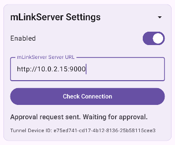
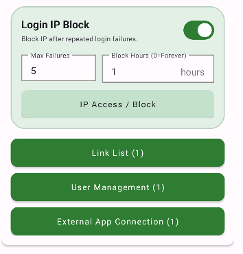
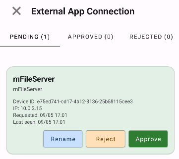
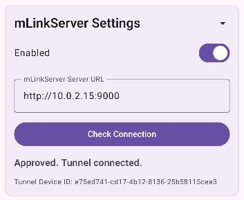
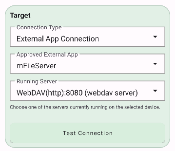

외부 앱을 승인하고 링크의 대상으로 연결하기
mFileServer처럼 mLinkServer 연결 기능을 제공하는 외부 앱은 승인된 뒤 mLinkServer의 링크 대상이 될 수 있습니다. 이 안내에서는 mFileServer를 예시로, 연결 요청부터 링크 저장까지의 전체 과정을 설명합니다.
연결 기능 활성화
연결 확인
이름 변경 후 승인
승인 상태 확인
실행 중인 서버 선택
시작 전 확인할 사항
- mLinkServer의 웹 서버가 실행 중이어야 합니다. 외부 앱은 이 웹 서버 주소로 승인 요청을 보냅니다.
- mFileServer가 mLinkServer에 접근할 수 있는 네트워크에 있어야 합니다. 같은 기기라면 해당 기기의 IP 주소를, 다른 기기라면 mFileServer에서 접근 가능한 mLinkServer의 주소를 사용하세요.
- mFileServer에서 링크 대상으로 사용할 서버(예: WebDAV 서버)를 미리 실행해 두세요. 승인만 완료해도 실행 중인 서버가 없으면 링크 대상 목록에서 선택할 수 없습니다.
mFileServer에서 mLinkServer 연결을 설정합니다
mFileServer의 설정 화면에서 mLinkServer Settings를 열고 Enabled를 켭니다. 이어서 mLinkServer Server URL에 현재 실행 중인 mLinkServer 웹 서버의 주소를 입력합니다.
- 주소는 프로토콜과 포트를 포함해 입력합니다. 예:
http://10.0.2.15:9000 - 입력한 URL은 mFileServer에서 실제로 도달할 수 있어야 합니다. 주소나 포트가 틀리거나 mLinkServer 웹 서버가 꺼져 있으면 승인 요청을 보낼 수 없습니다.
- Check Connection을 누르면 서버 상태와 주소를 확인한 뒤 승인 요청을 보냅니다.

mLinkServer에서 승인 요청을 확인하고 승인합니다
승인 요청을 보낸 뒤 mLinkServer의 메인 화면에서 외부 앱 연결 버튼을 누릅니다. 대기 목록에는 요청한 mFileServer가 표시됩니다.
- 대기 항목에서 이름 변경을 먼저 선택해 알아보기 쉬운 이름으로 바꾸세요. 이 이름은 나중에 링크를 추가할 때 외부 앱을 고르는 목록에 표시됩니다.
- 같은 종류의 앱을 여러 개 연결할 수 있으므로, 예를 들어 집 NAS mFileServer처럼 용도나 위치를 포함한 이름을 권장합니다.
- 요청한 기기와 IP 등 표시된 정보를 확인한 후 승인을 누릅니다. 본인이 요청하지 않은 항목은 승인하지 말고 거절하세요.


mFileServer에서 승인 완료 상태를 확인합니다
mLinkServer에서 승인한 후 mFileServer 설정 화면으로 돌아와 Check Connection을 다시 누르거나 상태를 새로 고칩니다. Approved. Tunnel connected.가 나타나면 외부 앱 연결이 완료된 것입니다.
승인 대기 메시지가 계속 보이면 mLinkServer의 외부 앱 연결 목록에서 해당 요청이 승인되었는지, 그리고 처음 입력한 URL의 웹 서버가 계속 실행 중인지 확인하세요.

새 링크의 대상에 외부 앱을 선택합니다
mLinkServer에서 링크 추가를 열고 대상의 연결 방식을 외부 앱 연결로 선택합니다. 직접 IP/도메인을 입력하는 방식 대신, 승인된 mFileServer가 링크 요청을 처리하도록 지정하는 단계입니다.
- 승인된 외부 앱에서 2단계에서 저장한 이름을 선택합니다. 이름을 바꾼 경우 변경된 이름으로 표시됩니다.
- 실행 중인 서버에서 mFileServer가 현재 제공 중인 서버를 선택합니다. 예시에서는 WebDAV(http):8080 (webdav server)를 선택했습니다.
- 선택한 서버가 목록에 없다면 mFileServer에서 그 서버를 먼저 시작한 다음 연결 상태를 다시 확인하세요.
- 필요하면 연결 테스트로 대상 서버가 응답하는지 확인합니다.

나머지 링크 설정을 완료하고 저장합니다
외부 앱을 대상으로 선택한 뒤의 링크 설정 방식은 기존과 같습니다. 공개할 도메인 또는 경로, 매치 방식, 허용할 사용자를 지정하고 저장하세요. 저장한 링크로 들어온 요청은 mLinkServer를 거쳐 선택한 mFileServer의 실행 중인 서버로 전달됩니다.
- 링크 값이 기존 규칙과 겹치지 않는지 확인하세요.
- 선택 사용자 방식이라면 연결할 사용자가 해당 링크 사용 권한을 갖고 있는지 확인하세요.
- mFileServer의 서버를 중지하거나 외부 앱 연결이 끊기면 해당 링크의 대상 서버에 연결할 수 없습니다.
문제가 생겼을 때
- 승인 요청이 보이지 않음: mLinkServer 웹 서버 실행 상태, URL의 IP/포트, 두 앱 사이의 네트워크 연결을 확인하세요.
- 승인했는데도 연결되지 않음: mFileServer에서 연결 확인을 다시 실행하고, 승인된 외부 앱 목록에 해당 항목이 남아 있는지 확인하세요.
- 실행 중인 서버를 고를 수 없음: mFileServer에서 사용할 서버를 실행한 뒤 목록을 새로 고치거나 연결을 다시 확인하세요.